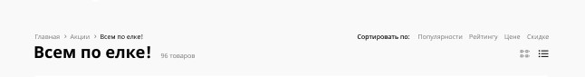
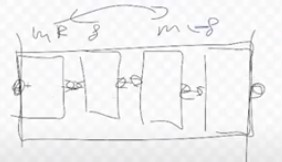
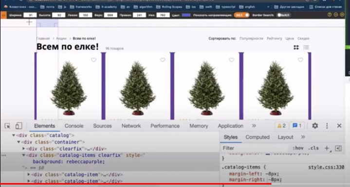

Есть такое понятие, как бустраповская сетка.
Обычно контейнер страницы по ширине всегда делают 40 px.
С чего начинаем писать сайт. Первое - делаем контейнер
- Создаем отдельную папку проекта. В ней папку для всех картинок, а также В ней создаём индексный файл, а также папку css - там будем хранить все наши стилевые файлы.
- Создаем папку со шрифтами, возможно подключим локально, возможно через гугл
- Скидываем все паддинги и марджины во всем проекте (дефолтные отсупы - браузера по умолчанию),
Плюс прописываем box-sizing: border-box.- Далее задаем класс контейнер, и станартный размер - 1140px
- Выравниваем блок по центру. Задаем margin авто слева и справа: magrind: 0 auto
- Если будем прописывать ul>li, то маркер будет вылазить за контейнер.
Чтобы его убрать - прописываем стилевое свойство list-style-type и пишем none.
- В стилевом файле можно через комментарии отмечать блоки: отдельно header и т.д.
Второе - проверяем, какие шрифты нам необходимы.
- Кликаем по всем элементам, записываем нужные шрифты и жирность
- Ищем в гугл фонтах и устанавливаем на страницу. Обязательно вставляем все выше ссылки на стилевой файле css
- На body вешаем основный шрифт, в данном случае roboto, а уже где нужно - будем шрифт менять
Делаем 1_1 блок

- Размер блока определяем - 231 высота. На самом деле, задание точного размера создаст проблему после при адаптиве. Но пока делаем так
- Ширину блока мы не трогаем, т.к. у нас она будем зависеть от щирины контейнера и динамически выстраиваться.
- Первый див у нас будет с классом header, создаем его и внутрь добавляем див с контейнером
- Внутри контейнера делим этот header на две части: top и bottom
- Определяем что в нем будет: ul с li, потом тег p, потом опять ul с li, потом p, возможно span
- Копируем текст и делаем ul c li
- Они у нас будут вести куда-нибудь, поэтому внутри li прописываем ссылки - тег a
- Все ссылки у нас не подчеркиваются, поэтому мы пишем тегу a text-decoration и пишем none
- Даже если мы задаем цвет bode черный, ссылки его все равно не наследуют и будут синие, чтобы они были черные - пишем свойство color и указываем inherit
- Далее смотрим, какие стилевые свойства нам нужны, копируем и вставляем в тег a
Смотрим в css. Лучше не вставлять для всех ссылок, а использовать иерархические селекторы.
- Пишем все селекторы по очереди, даже если пока стили там не нужны: header, потом header-top, header-top ul и .т.д.
- Теперь необходимо расположить эти элементы не в столб, а в строку. Есть два способа.
Можно использовать display: block, но тогда у нас появятся некоторые ограничения. Лушче использовать флоты.
- Для того, чтобы не создавать распорку - прописываем clearfix. Задаем нужному элементу, т.е. ul класс clearfix
- Делаем отступы между лишками. Нам по макету написано 29 пикселей сверху до текста, берем через линейку прямоугольник высотой 29 пикселей и примеряем, сколько padding-top до текста у нас должен быть. Получается 26 px
- Меряем расстояние между блоками - 26 пикселей. Задаем их лишкам через margin
- Первый мини-блок будет зафлочен влево, крайние справа - зафлочены справа, а центральный - не будет зафлочен
- Делаем сначала правую часть через ul и 4 лишки. Так как у нас два ула в диве, то присваиваем каждому отдельный класс
- Выгружаем картинки, лучше всего выгружать в svg. Вставлем через img в каждый li
- Зафлочиваем первый ul влево, второй вправо
- clearfix нужно поставить на уровень выше, чтобы ul не ставилис друг под другом. Ставим на div
- Мы зафлотили сам ul, теперь зафлочиваем все его лишки влево, чтобы они стали в строку.
- Между li расстояние 24, ставим margin-right - 24. но между двумя последними оно больше
Через nth-child нахдим этот li и задаем ему размер 45
Расстояние между последней картинкой и текстом - 8 пикселей. Поэтому мы ссылаемся на last-child и в иерархии добавляем img и ставим margin-right - 8
- Нужо сверху этим элементам также задать паддинг. Отступ - 24 пикселя.
Берем линейку, делаем прямоугольник высотой 24 пикселя
- Слово войти у нас осталось внизу. Можем попробовать несколько вариантов: vertical-align.
Для этого его сначала заворачиваем в span. Подбираем нужный вертикал-align.
- Далее нужно вставить номер. Пишем тег p, задаем класс.
- копируем картинку телефона, вставляем как img. Но лучший вариант был ыб вставить через фон
- В спан добавили номер. Длеаем расстояние между картинкой и текстом 8 пикселей
- Делаем сверху паддинг, опять берем линейку на 25 пикселей и отмеряем., добавляем 24 p сверху.
- Также, как и выше, ставим span вертикальный align и подбираем нужное значение, чтобы текст стал по середине.
- Последний штрих - сделать отступ между первым блоком и средним. Поставить просто margin не получится, т.к. отступ будет отсчитываться от начала контейнера.
поэтому, берем линейку, ставим по ширине 106 пикселей, и ставим между первым блоком и phone. Оступаем на нужное количество и прописываем это первому тегу через magrin-right
- Можем убрать бордер
Делаем 1_2 блок

- Создаем див с классом header-search. Ему можно сразу вешать clearfix, т.к. тоже все будет зафлочено внутри.
- Сохраняем все картинки. Будем три img и див. Сразу добавляем картинки. Лого сохраняем в пнг
- Добавляем кнопку через тег button
- Прописываем иерархию селекторов в css, все элементы зафлочиваем влево.
- Расстояние между первым элементом и сверху надписи - 65 пикселей. Прописываем через margin-top
- Далее смотрим расстояние справа от элемента, далее следующий элемент, расстоянеи серху и справа и т.д.
- Теперь стилзуем поисковую строку, заходим в инспектор и копируем стиль. И ширину высоту. Но берем недробные числа.
Смотрим расстояние сверху от надписи и прописываем через margin-top
- Теперь задаем внутри паддинги для лупы со всех сторон согласно макету.
Забираем стили элемента поиск. Т.к. у нас 500 - это roboto, которая стоит по умолчанию, то font famiy убираем
Через vertical-align его пододвигаем. И отодвигаем через paddint-left от лупы на 16 пикселей
- Дальше делаем корзину, забираем ее размеры, а также фон и радиус и убираем бордер на этом элементе
- Делаем флот вправо, чтобы он уперся в контейнер
- Через линейку выравниваем его с полем поиска
- Далее забираем цвет с шрифтом для текста.
- Два спана делали для того, чтобы одному из них задать бордер правый, забираем его из макета.
Для этого самому span задаем свойства display: block-inline
- Делаем отступ через паддинг правый от текста до границы - 14 пикселей, а также задаем высоту - 28 пикселей.
- Чтобы немного выравнять span задаем ему vertical-align: sub
- И тройке также задаем отступ слева 14 пикселей (только через margin, т.к. это расстояние между элементами) b vertical-align:sub
Делаем 1_3 блок

- Следующий див не делаем, там будет ul с лишками, они тоже будут зафлочены, поэтому сразу в ul делаем clearfix
- В лишках проставим ссылки
- Для удобства ul также зададим класс - header-bottom
- Забираем сразу шрифты, не забываем дописывать sans-serif
- Расстояние между элементами 24 пикселя. Но так как первый и последний элемент должны упираться к верхнему блоку сбоку, то мы не можем прописать margin справа всем 24, т.к. блоки поедут
- Лишкам сверху задаем расстояние также 4 пикселя от поиска
- Центрировать через align не сработает, по-другому - плохо, т.к. будут жесткие размеры. Луше на глаз сделать слева отступ. И потом на глаз подбираем расстояние между блоками, чтобы они верно вытроились
- Последнему li задаем класс. И закрашиваем в красный цвет
Делаем 2 блок

- Так как картинка с фоном, непрозрачная, выбираем jpg. Сохраняем. Её мы будем вставлять как фон без контейера, т.к. она должна быть на всю ширину экрана
- С header мы закончили, мы его в коде скрываем, следующий блок - sale.
- Размер задаем как в макете, высота 38, хотя это плохая практика. Потом будет понятно почему
- Размещаем по центру картинку через фон, без повторений. Устанавливаем свойство background-size: cover;, оно растягивает на всю ширину экрана фон
- Расстояние от sale до header 37 пикселей, устанавливаем через margin-top
- Делаем блок внутри sale. Делаем внутри див, задаем ему класс, размеры берем из макета, шрифты также
- Опускаем блок на 77 пикселей, как в макете. Для этого в sale пишем паддинг топ и флотив его вправо
- Лучше всего текст занести весь в h1, т.к. инфа важная и по ней в поисковой системе нас искать будут
- Шрифты лучше кажддому span прописать отдельно. Задаем всем block, чтобы они выдавили друг друга на след строку
- В родителе делаем выравнивание по центру. Делаем отступы. от первой надписи сверзу 46 пикселей, берем линейку, делаем такой величины прямогольник и спускаем до нужного места. и так все три
Делаем 3 блок

- Задаем новый див filters-wrap, внутри него делаем контейнер, т.к. будем флотить элементы - сразу задаем класс ckearfix
- Внутри делаем див, в нем размещаем картинку через img, задаем этому диву высоту 83 пикселей, и спан Фильтры
- После делаем ul с лишками и ссылками a
- Редактируем див filters. Задаем высоту у него, делаем два бордера по бокам, флоти влево, а ul вправо. Задаем ширину 272, берем фонты.
От бордера левого до картинки 83 пикселя, и сверху 27. Поэтому в диве filters делаем padding-top 27px, картинку слева margin делаем 83.
Между картинкой и текстом - 8 пикселей, поэтому поставим еще margind-right 8 на картинку. В фильтру задаем vertical-align и выравниваем
- Делаем остальные. Копируем фонты в лишки, флотим все влево, расстояние между ними 64 пикселя, задаем через margin-right. Т.к. последний элемент должен упираться в контейнер, мы у него margin-right убираем чрезе last:child
- От элементов до блока картинки 3 расстояние, задаем через agrin-top в ul
- Делаем ховер на первый li в ul и добавляем ему border-bottom, у него есть падинг 5, цвет берем из макета, задае inline-block
Делаем все остальное
Вся ост. страница должна быть на немного сером фоне, поэтому сделаем див catalog. Clearfix нужен будет в блоке над елками, поэтому пока его не задаем.
Видно, что наши елку будут в дивах, размещенных на всю ширину, и все эти дивы расположены внутри одного контейнера, поэтому мыего сразу и делаем
Первый блок catalog top, поделим его на две части: left и right. Это называетя хлебные крошки, поэтому даем класс catalog-breadcrumbs, также делаем catalof-sort сортировки

- Контейнеру задаем clearfix, т.к. эти элементы будут флотиться
- Делаем ul с лишками и a внутри. Для того, чтобы сделать такие треугольники, необходимо задать классы и сделать треугольники через before или after
- Зафлочиваем сразу хлебные крошик влево, сортировку вправо
- После лишек делаем after, в контент ссылка на треугольник.
Т.к. позиционирование на тот момент еще не проходили - от after пока отказываемся. Вставляем через img
- Забираем все стили текста, флотив влево. Сверху в каталоге делаем паддинг 66.
- Чтобы стрелки были на расстоянии, задаем им margin слева и спрва по 4 пикселя и отцентрируем вертикально через vertical-align
- Так ак последний пункт у нас черный - активный, задаем ему класс activ
- Далеем - все по елке, делаем как h2, он будет блочным, сразу уйдет вниз. Забираем свойства стилевые из макета.
- Добавляем спан 96 товаров, забираем стили. Чтобы он не был с новой строчки - добавляем его в h2
- Получилась ситуация, что так как ul зафлочены и не задана ширина элемента - наш текст упирается и переносится на след строку. Задаем ширину хлебным крошкам необходимую, подбираем сами
Потом задаем ul обтекание - clearfix, чтобы элемент спустился вниз
- Далее редактируем сортировку.
- Опять делае ul с лишками, first child будет черного цвета, лишки зафлочиваем влево, делаем margin справа 14, а после первой лишки 17
- Выгружаем картинки. Добавляем через img, флотив вправо, и они меняются местами, вспоминаем звезды. Для этого в коде их нужно поменять местами.
- Задаем ul тоже clearfix, т.к. картинки должны уйти вниз и даем на ul отступ снизу через margin
Делаем все остальное
Делаем блок с елками

- Выгружаем все картинки в пнг, т.к. необходимы картинки без фона
- Делаем сначала размер самой карточки. Забираем стили, фон, размеры, бордер радиус
- Далее нужно добвить сердечко, можно через фон, можно черезе img, но лучше делеать черзе фон
- Вставляем елку в див черезе img, и заворачиваем еще в один див для того, чтобы ее центрировать как тест, т.к. все что под елкой нам центрировать не надо
- Задаем блоку items отступы 20 сверху, слева и справа черезе паддинг
- Самой картинке делаем ширину 100%, отступ сверзу 16 через паддинг
- Звезды можно сделать через div и в нем спаны. Спан, который будет незакрашен - задаем отдельный класс empty, и спан с текстом.
- Задаем размер звезда - по 9 пикселей ширина и длина, а спану присваиваем inline block, в них фоном устанавливаем картинки
Так как на нужно, чтобы на последние два спана звезда эта не отображалась - пропишем not.класс not.класс
Класс empty - задаем полупрозрачную звезду, редактируем класс text (шрифты, отступ и т.д.)
- Копируем остальной текст, вставляем его через h4, p, h5, забираем фонты из фигмы, расстояния.
- Добавим корзину, это будет див с классом баскет, забираем ширину и высоту, цвет, радиус бордера, добавляем через фон корзинку без повторений и по центру, флотим вправо
- Сделаем item отсуп снизу 16 пикселей, а корзинке поставим отрицательный margin, через линейку на глаз
У нас получилась карточка с елкой. Теперь мы можем их копировать и флотить.
Обернем их все в один див и назовем catalog items и повесим на него clearfix
Последяя 4 елка съезжает вниз, почему это происходит, потому что у нас общий размер блока+мардин 6 * на количество блоков больше, чем самого контейнера = 1156, т.е. марджин после последней елки необходимо убрать спрва.
Есть много способок как это сделать. Самый лучший вариант, это обернуть 4 елки в один див, каждой елке сделаьт слева и справа марджин 8 пикселей, а задать ему мардин -8 пикселей слева и справа

итог получится такой, мы сдвинем эти блоки за контейнер на эти 8 пикселей справа и слева

Задаем общему каталогу items 28 пикселей отступа сверху от надписей.
Если сейчас поставим другие картинки, елки, то у нас полетит все, размеры все
Делаем блок между елками

- Текст помещаем в h, забираем стили, отсупы, ниже делаем кнопку посмотреть товары.
- Так как это див, то можем задать только высоту, делаем задний фон с игрушками
- Делаем отспы текст сверху и слева
- Стилизуем кнопку, оступы, фон и т.д.
Делаем кнопку после елок
Так как у нас кнопки две и оч похожи, задаем класс на каждую кнопку
- Копируем кнопку, присваиваем такой же класс, чтобы отдельно стилизовать обращаемся через иерархию классов
- Под кнопкой будет тег p
Последний блок

- Делаем див с классом футер, внутри делаем контейнер и у нас будет несколько ul с лишками
- Сделали все лишки, зафлотили влево.
Контейнеру задаем паддинг сверху и снизу, фон, который нужен сделать немного прозрачным. Сбрасываем обтекание.
- Делаем отступы у ul между собой
- Стилизуем первую лишку, забираем стили, отсупн снизу 12
- Стилизуем остальные лишки, забираем стили, между ними 8
- Картинки и мобильные приложения далем тоже через ul>li>a>img
- Остальное выкидыаем за преелы контейнрера
Адаптив странички
- Так ак при сжимании экрана у нас все едет и появляется скрол, мы его должны убрать.
Для этого в body прописываем overflow-x:hidden. Т.е. скрываем полосу прокрутки по x
- Когда уменьшаем размер, то у нас контейнер расширяет экран, т.е. выходит за его предеы, а боди все равно уменьшается (в данном случае это картинка с елкой)
Т.е. у нас боди ужимается, а контейнер остается, т.к. ему мы задали определенный размер.
- Для этого мы делаем медиазапросы. Делаем viewport, его можно вызвать через !, копируем , чтобы не искать и не копировать.
meta name="viewport" content="width=device-width, initial-scale=1.0"
content="width=device-width - говорит о том, что ширина контента она подстраивается у нас под ширину устройства, с кот. мы смотрим
Добавляем user-scalable=no - для того, чтобы пользователь не мог масштабировать
Таким образом, ширина body подстраивается под ширину нашего устройства
Добавим еще maximum-scale=1.0, minimum-scale=1.0" - для чего нужно почитать
- Создаем файл css для медиазапросов, его всегда прописываем ниже, чем сам файл stye.css, чтобы они не перебивали друг друга. Иначе медиазапрос может не сработать
Первый медиазапрос
- Первый медиазапрос. На размере 1180 уже начинает что-то меняться, нужно делать медиазапрос
- Есть два варианта как сделать адаптивную верстку: сначала начать делать мобильную расширении, потом перейти к декстопному, лиоб наоборот
- Мы делаем сначала декстопную, потом идем на уменьшение
- Обычно дизайнер будет давать версии под мобильные, под адаптивные декстопные и т..д. Пока делаем на глаз
уменьшаем размер контейнрера, т.к. упирается в него - к примеру до 900
- У нас все поехало, начинаем исправлять. Длеаем телефон, убираем отступ от текста слева, ужимаем лишки справа и слева
- Меняем строку поиск на нормальный input. Было:
div class="header-search clearfix"
img src="img/humb.svg" alt="humb"
img src="img/logo.png" alt="logo"
div class="search"
img src="img/search.svg" alt="search"
span>Поиск/span
/div
button
span>Корзина/span
span>3/span
/button
/div
Вместо span Поиск - пишем input type:text
Задаем позиционирование. Для класса .header-search{
position: relative;
}
для картинки .header-search img{
position: absolute;
}
Меняем .header-search .search span на input в стилях.
- Редактируем input, убираем паддинг, вертикал-align, line-height, делаем background: transparent, убираем бордер и немного нужно сдвинуть
Убираем паддинги у родителя, чтобы текст стал слева вверху.
делаем inout блочным и инлайновым, и задаем ширину и высоту 100%
Делаем паддинг 55 на газ, чтобы был отступ от картинки
Позиционируем картинкуы
Теперь уменьшая размер дива, будем уменьшаться input. Делаем ширину дива 462
- Далее сдвигаем текст ниде, лишки влево, уменьшаем марджин слева
- С картинкой се ок, далее идем.
Можно ужать фильтр, сделать его 200 пикселй, убираем отступ слева от картинки, делаем 42, у лишек уменьшаем отступ справа - 30
- Далее уменьшаем див. в ктором написано всем по елке до мин размера - 390, все ост будет ок
- Далее, размер в сумме картинок получается больше, чем наш контейнер (900). Делаем больше сами блоки с елками по ширине, чтобы влезло 3 на странице
- Все остальное оставляем, идем в самый низ. Уменьшаем марджины справа. чтобы влезли все ul
Второй медиазапрос
- Делаем медиазапрос на ширине 930
- Уменьшаем контейнер до ширины. Считаем так, чтобы влезло елки: размер блока + отступы = 560
- Еще добавим для input лайбл
- Редактируем верхнюю строку, убираем флот, умньшаем размер, убираем margin-right с последнего элемента и нужно выравнять ul по центру
- Далее редактируем картинку, лого, поиск. Уберем логотип (скроем через display), сделаем меньше ширину дива
- Дальше убираем в ul отступ слева, текст оставим в две строчки, у первого дli убираем отступ слева, и между лишками тоже делаем отступ меньше.
- Фильтр делаем на 00 процентов и центрируем по середине
Текст ниже оставляем в вде строчки, делаем отступ внизу 10
- Блок с текстом всем по елке делаем мин по ширине, выравниваем по центру, убираем флоn
- Далее текст флотив влево. Задаем размер всего блока 100% и влотим влево, ul также влотим влево, размер его на глаз
- Редактируем футер
- Второму ul задаем высоту, как у первого - 214 и делаем отступ снизу
Третий медиазапрос
- Медиазапрос при ширина 560.
Размер мобильного устройства - 320px,чтобы немного по бокам оставались отсупы - делаем контейнер 300 пикселей
- Первую строку убираем флот,
Первому ul с картинками тоже убираем флот. Так как лишки у нас зафлочены, а ul нет, то он перестал их оборачивать, поэтому можно сделать им также overflow hidden
Далее картинке сверху убираем отступы. флотим вправо, делаем сверху отрицательный margin. Но вообще в проектах лучше так не делать, лучше сделать второй див для мобильной версии, его скрыть, а потом показать.
Блок с input делаем сверху меньше отступ
.header-search .search зададим ширину 1005, чтобы не вылазила из контейнера
- У корзины убираем флот, делаем ширину 100%
- Лишкам ниже убрать флоты и сделать их в столбик без отступов
- У картинки фильтры убираем слева отступ.
- Далее блок всем по елке. 96 товаров вылезло за пределы контейнера. Поэтому мы ему задаем блок, чтобы перенести на след строку и сбоку вбираем отступы
- Далее ul убираем флот и делаем ширину на 100%, убираем также флот у лишек и первому даем сверху отступ
- catalog-items убираем отступы слева и справа
- а просто блоку item ставим ширину 100% и убираем отступы слева и спрва
- Дальше на картинке с надписью уменьшаем паддинг слева и сверху, можно добавить background-position, чтобы немного сместить картинку
- Дальше идем в футер, второму ul задаем сверху отступ и убираем высоту, т.к. сильно большой отступ, третьему блок тоже отступ снизу 40
Добавим еще медиазпрос, чтобы при ширине экрана 450 и меньше, текст внутри оранжевого блока был меньше